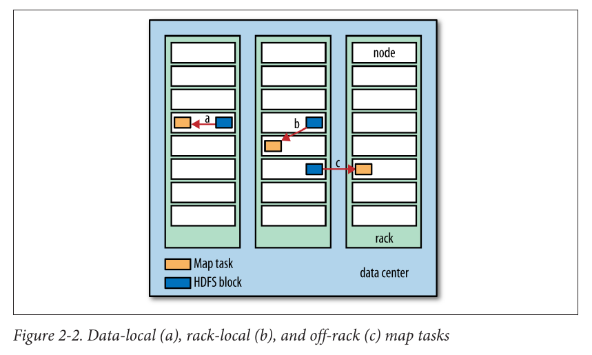
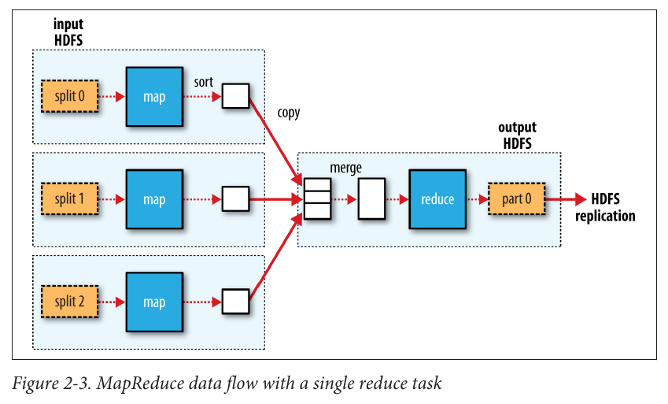
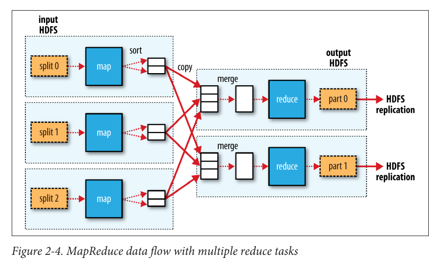
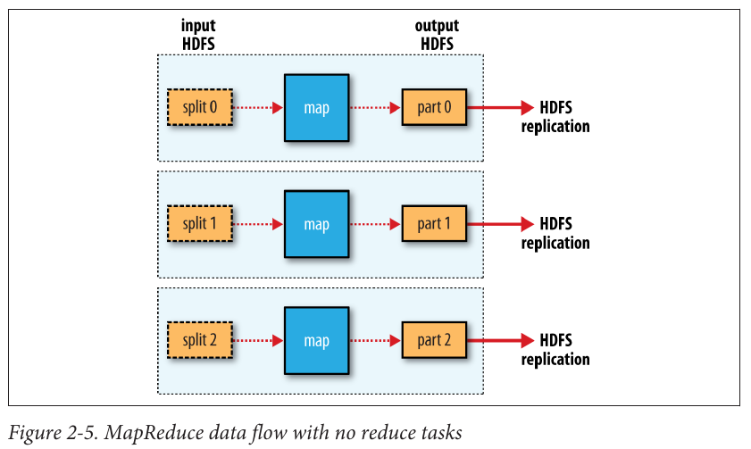

<img src="images/Hadoop_tdg_cover.png" style="float: right; max-width: auto; height: 500px; margin: 1em;"/> ## ITEC 4220 - Advanced Data Analytics ### Module 5 - Big Data algorithms and tools: MapReduce #### Cengiz Gunay, Spring 2019 #### Reading: Ch 2 Hadoop - The definitive guide
### Data! - Prediction: the world will have 44 _zettabytes_ by year 2020 - Scale: mega, giga, tera, peta, exa, zetta (`$10^{21}$`) Data producers: - NY Stock Exchange: 4-5 terabytes/day - Facebook: 7 petabytes/month - Ancestry.com: 10 petabytes - Internet Archive: 18 petabytes `$^*$` Numbers from textbook, circa 2013-2014
### The need for parallel and distributed processing - Large data requires more than one machine - Parallelization is painful - Load balancing is a problem, otherwise you wait for the slowest one - **MapReduce** algorithm implementation in **Hadoop** provides a solution - Has been widely adopted in industry - Hadoop comes with an ecosystem of tools: YARN, HDFS, Pig, Spark <img src="images/hadoop-logo.png" style="max-width: auto; height: 100px; margin: 10px;"/>
### MapReduce compared to traditional RDBMS ||Traditional RDBMS|MapReduce |-|-|- |Data size|Gigabytes|Petabytes |Access|Interactive and Batch|Batch only |Updates|Read and write many times|Write once, read many times |Transactions|ACID|None |Structure|Schema-on-write|Schema-on-read |Scaling|Nonlinear|Linear - **RDBMS**: Relational database management system - **ACID**: Atomicity, Consistency, Isolation, Durability
### What is MapReduce? An example A weather dataset from White Chapter 2 - Data from weather stations all around world - Each row is one reading from one station at a time <img src="images/Hadoop_Ch2_example2-1.png" style="max-width: auto; height: 300px; margin-left: auto;"/>
### Back to the command-line: inspect the data ```bash % ls raw/1990 | head 010010-99999-1990.gz 010014-99999-1990.gz 010015-99999-1990.gz 010016-99999-1990.gz 010017-99999-1990.gz 010030-99999-1990.gz 010040-99999-1990.gz 010080-99999-1990.gz 010100-99999-1990.gz 010150-99999-1990.gz ``` <!-- .element: style="width: 25ex; margin: 10px; float: left;" --> <img src="images/Hadoop_Ch2_example2-2.png" style="max-width: auto; height: 300px; margin: 10px;"/> - Many small files; can be analyzed sequentially with <!-- .element: class="fragment" data-fragment-index="2" --> `awk`: ```bash % ./max_temperature.sh 1901 317 1902 244 1903 289 1904 256 1905 283 ... ``` <!-- .element: style="width: 25ex; margin-left: auto;" class="fragment" data-fragment-index="2" -->
### Enter Map+Reduce: Can be partitioned to run on parallel hardware <img src="images/Hadoop_Ch2_figure2-1.png" style="max-width: auto; height: 400px; margin-left: auto;"/>
### Map in Java: (ID, row of text) `$\Rightarrow$` (year, temp) ```java public class MaxTemperatureMapper extends Mapper<LongWritable, Text, Text, IntWritable> { private static final int MISSING = 9999; @Override public void map(LongWritable key, Text value, Context context) throws IOException, InterruptedException { String line = value.toString(); String year = line.substring(15, 19); int airTemperature; if (line.charAt(87) == '+') { // parseInt doesn't like leading plus signs airTemperature = Integer.parseInt(line.substring(88, 92)); } else { airTemperature = Integer.parseInt(line.substring(87, 92)); } String quality = line.substring(92, 93); if (airTemperature != MISSING && quality.matches("[01459]")) { context.write(new Text(year), new IntWritable(airTemperature)); } } } ``` <!-- .element: -->
<img src="images/Hadoop_Ch2_figure2-1.png" style="max-width: auto; height: 200px; margin-left: auto;"/> ### Reduce: (year, [temps]) `$\Rightarrow$` (year, max temp) ```java public class MaxTemperatureReducer extends Reducer<Text, IntWritable, Text, IntWritable> { @Override public void reduce(Text key, Iterable<IntWritable> values, Context context) throws IOException, InterruptedException { int maxValue = Integer.MIN_VALUE; for (IntWritable value : values) { maxValue = Math.max(maxValue, value.get()); } context.write(key, new IntWritable(maxValue)); } } ```
### Putting it all together ```java public class MaxTemperature { public static void main(String[] args) throws Exception { if (args.length != 2) { System.err.println("Usage: MaxTemperature <input path> <output path>"); System.exit(-1); } Job job = new Job(); job.setJarByClass(MaxTemperature.class); job.setJobName("Max temperature"); FileInputFormat.addInputPath(job, new Path(args[0])); FileOutputFormat.setOutputPath(job, new Path(args[1])); job.setMapperClass(MaxTemperatureMapper.class); job.setReducerClass(MaxTemperatureReducer.class); job.setOutputKeyClass(Text.class); job.setOutputValueClass(IntWritable.class); System.exit(job.waitForCompletion(true) ? 0 : 1); } } ```
### A sample run ```bash % export HADOOP_CLASSPATH=hadoop-examples.jar % hadoop MaxTemperature input/ncdc/sample.txt output 14/09/16 09:48:39 WARN util.NativeCodeLoader: Unable to load native-hadoop library for your platform... using builtin-java classes where applicable 14/09/16 09:48:40 WARN mapreduce.JobSubmitter: Hadoop command-line option parsing not performed. Implement the Tool interface and execute your application with ToolRunner to remedy this. 14/09/16 09:48:40 INFO input.FileInputFormat: Total input paths to process : 1 14/09/16 09:48:40 INFO mapreduce.JobSubmitter: number of splits:1 14/09/16 09:48:40 INFO mapreduce.JobSubmitter: Submitting tokens for job: job_local26392882_0001 14/09/16 09:48:40 INFO mapreduce.Job: The url to track the job: http://localhost:8080/ 14/09/16 09:48:40 INFO mapreduce.Job: Running job: job_local26392882_0001 14/09/16 09:48:40 INFO mapred.LocalJobRunner: OutputCommitter set in config null 14/09/16 09:48:40 INFO mapred.LocalJobRunner: OutputCommitter is org.apache.hadoop.mapreduce.lib.output.FileOutputCommitter 14/09/16 09:48:40 INFO mapred.LocalJobRunner: Waiting for map tasks 14/09/16 09:48:40 INFO mapred.LocalJobRunner: Starting task: attempt_local26392882_0001_m_000000_0 14/09/16 09:48:40 INFO mapred.Task: Using ResourceCalculatorProcessTree : null 14/09/16 09:48:40 INFO mapred.LocalJobRunner: 14/09/16 09:48:40 INFO mapred.Task: Task:attempt_local26392882_0001_m_000000_0 is done. And is in the process of committing 14/09/16 09:48:40 INFO mapred.LocalJobRunner: map 14/09/16 09:48:40 INFO mapred.Task: Task 'attempt_local26392882_0001_m_000000_0' done. 14/09/16 09:48:40 INFO mapred.LocalJobRunner: Finishing task: attempt_local26392882_0001_m_000000_0 14/09/16 09:48:40 INFO mapred.LocalJobRunner: map task executor complete. 14/09/16 09:48:40 INFO mapred.LocalJobRunner: Waiting for reduce tasks 14/09/16 09:48:40 INFO mapred.LocalJobRunner: Starting task: attempt_local26392882_0001_r_000000_0 14/09/16 09:48:40 INFO mapred.Task: Using ResourceCalculatorProcessTree : null 14/09/16 09:48:40 INFO mapred.LocalJobRunner: 1 / 1 copied. 14/09/16 09:48:40 INFO mapred.Merger: Merging 1 sorted segments 14/09/16 09:48:40 INFO mapred.Merger: Down to the last merge-pass, with 1 segments left of total size: 50 bytes 14/09/16 09:48:40 INFO mapred.Merger: Merging 1 sorted segments 14/09/16 09:48:40 INFO mapred.Merger: Down to the last merge-pass, with 1 segments left of total size: 50 bytes 14/09/16 09:48:40 INFO mapred.LocalJobRunner: 1 / 1 copied. 14/09/16 09:48:40 INFO mapred.Task: Task:attempt_local26392882_0001_r_000000_0 is done. And is in the process of committing 14/09/16 09:48:40 INFO mapred.LocalJobRunner: 1 / 1 copied. 14/09/16 09:48:40 INFO mapred.Task: Task attempt_local26392882_0001_r_000000_0 is allowed to commit now 14/09/16 09:48:40 INFO output.FileOutputCommitter: Saved output of task 'attempt...local26392882_0001_r_000000_0' to file:/Users/tom/book-workspace/ hadoop-book/output/_temporary/0/task_local26392882_0001_r_000000 14/09/16 09:48:40 INFO mapred.LocalJobRunner: reduce > reduce 14/09/16 09:48:40 INFO mapred.Task: Task 'attempt_local26392882_0001_r_000000_0' done. 14/09/16 09:48:40 INFO mapred.LocalJobRunner: Finishing task: attempt_local26392882_0001_r_000000_0 14/09/16 09:48:40 INFO mapred.LocalJobRunner: reduce task executor complete. 14/09/16 09:48:41 INFO mapreduce.Job: Job job_local26392882_0001 running in uber mode : false 14/09/16 09:48:41 INFO mapreduce.Job: map 100% reduce 100% 14/09/16 09:48:41 INFO mapreduce.Job: Job job_local26392882_0001 completed successfully 14/09/16 09:48:41 INFO mapreduce.Job: Counters: 30 File System Counters FILE: Number of bytes read=377168 FILE: Number of bytes written=828464 FILE: Number of read operations=0 FILE: Number of large read operations=0 FILE: Number of write operations=0 Map-Reduce Framework Map input records=5 Map output records=5 Map output bytes=45 Map output materialized bytes=61 Input split bytes=129 Combine input records=0 Combine output records=0 Reduce input groups=2 Reduce shuffle bytes=61 Reduce input records=5 Reduce output records=2 Spilled Records=10 Shuffled Maps =1 Failed Shuffles=0 Merged Map outputs=1 GC time elapsed (ms)=39 Total committed heap usage (bytes)=226754560 File Input Format Counters Bytes Read=529 File Output Format Counters Bytes Written=29 ```
### Hadoop MapReduce Exercise time! - Book word count [Apache MapReduce tutorial](http://hadoop.apache.org/docs/current/hadoop-mapreduce-client/hadoop-mapreduce-client-core/MapReduceTutorial.html) - Log into Ursus.ggc.edu with given credentials and change passwords (only works on campus or through Ursus VPN - stay tuned for instructions) - Once on Ursus, you can setup your environment with: ```bash # Set Java & Hadoop environment module load java-1.6.0 export HADOOP_HOME=${JAVA_HOME}/lib/tools.jar # Add the Hadoop bin folder to your path export PATH=${PATH}:~hadoop/hadoop/bin ``` (To make permanent, add these lines to the end of your `.bashrc` file!)
### The Hadoop Distributed Filesystem (HDFS) Hadoop works on files in the HDFS that is different than your folders on Ursus. ```bash # List files on HDFS hadoop fs -ls /users/IntroParComp/ # Create your user folder inside HDFS hadoop fs -mkdir /users/IntroParComp/cgunay # Create an input subfolder (all files will be used as input) hadoop fs -mkdir /users/IntroParComp/cgunay/input01 # Copy Ursus files to your HDFS folder hadoop fs -put file01.txt /users/IntroParComp/cgunay/input01/file01 ``` (Replace `cgunay` with your username)
### Running the tutorial ```bash # Run your code with input and output folders hadoop jar wc.jar WordCount /users/IntroParComp/cgunay/input01 \ /users/IntroParComp/cgunay/output # Copy from HDFS back onto Ursus hadoop fs -get /users/IntroParComp/cgunay/output/outfile # Show contents of HDFS file hadoop fs -cat /users/IntroParComp/cgunay/output/outfile ``` - Watch progress and see Hadoop jobs status in browser by forwarding your local ports with: ```bash ssh -L 8088:ursus.ggc.edu:8088 -L 50070:ursus.ggc.edu:50070 ursus.ggc.edu ``` and then pointing any browser to http://localhost:8088 and http://localhost:50070
### HDFS: Hadoop Distributed Filesystem - Optimized to work on parallel hardware:
### HDFS _local_ data replication - Data shipped out to each machine via _input splits_ for Map tasks 
### HDFS input _splits_ merged into output _part_ 
### Workflow with multiple Reduce tasks - Output of Map can be used for different calculations: 
### Reduce step can be omitted - Sometimes Map is all you need: 